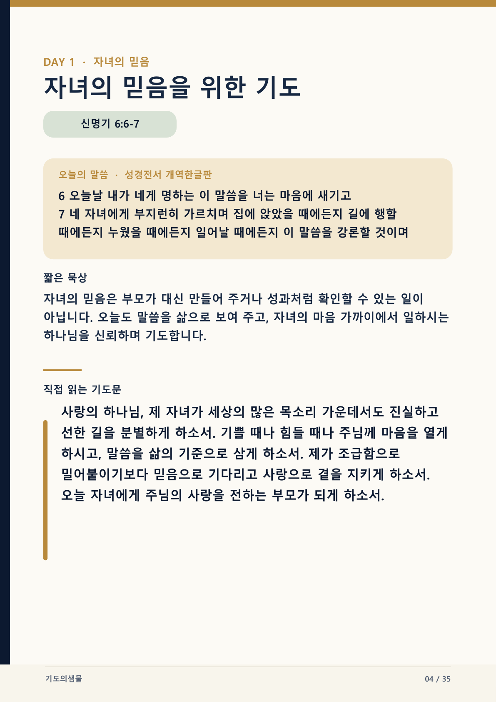
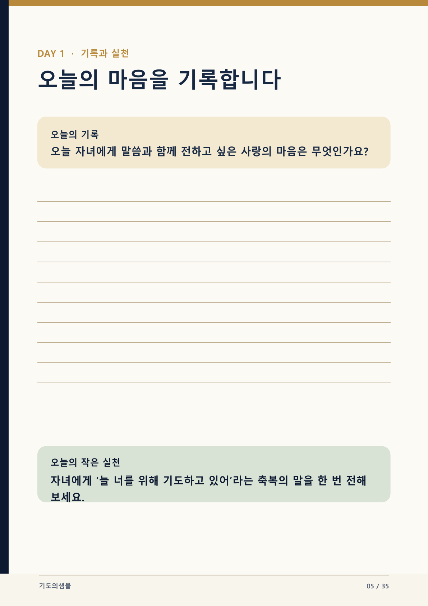

읽기 7분, 기도 3분, 기록 5분을 기준으로 매일 같은 시간에 사용합니다.
Prayer PDF Guide
한 장을 천천히 읽고,
한 문장을 삶으로 옮기는 법
기도문 PDF는 많이 읽는 자료가 아니라 말씀 앞에 머물고, 직접 기도하고, 오늘의 한 가지를 기록하도록 돕는 자료입니다.

읽기 페이지
말씀에서 기도로
마음의 속도를 늦춥니다
- 1. 시간을 정합니다방해가 적은 10~15분을 정하고 휴대폰 알림을 잠시 내려놓습니다.
- 2. 말씀과 묵상을 읽습니다장절과 본문을 서두르지 말고, 마음에 머무는 단어에서 잠시 멈춥니다.
- 3. 기도문을 소리 내어 읽습니다가족의 이름이나 자신의 상황을 넣어 나의 기도로 바꾸어 읽습니다.

기록 페이지
길게 쓰기보다
정직한 한 문장을 남깁니다
- 1. 오늘의 마음을 적습니다잘 쓴 문장보다 지금 하나님께 말씀드리고 싶은 마음을 한두 줄로 적습니다.
- 2. 작은 실천을 고릅니다오늘 안에 할 수 있는 연락, 경청, 쉼, 감사 중 한 가지를 실천합니다.
- 3. 다음 날 다시 펼칩니다전날의 기록을 짧게 돌아본 뒤 새로운 일차를 시작합니다.
세 가지 활용법
혼자서도, 가정에서도,
소그룹에서도 같은 흐름으로
한 사람이 말씀과 묵상을 읽고, 각자 한 문장씩 기도한 뒤 작은 실천을 함께 정합니다.
모임 전에 각자 한 일차를 사용하고, 기록 중 나누어도 되는 한 문장만 자발적으로 나눕니다.